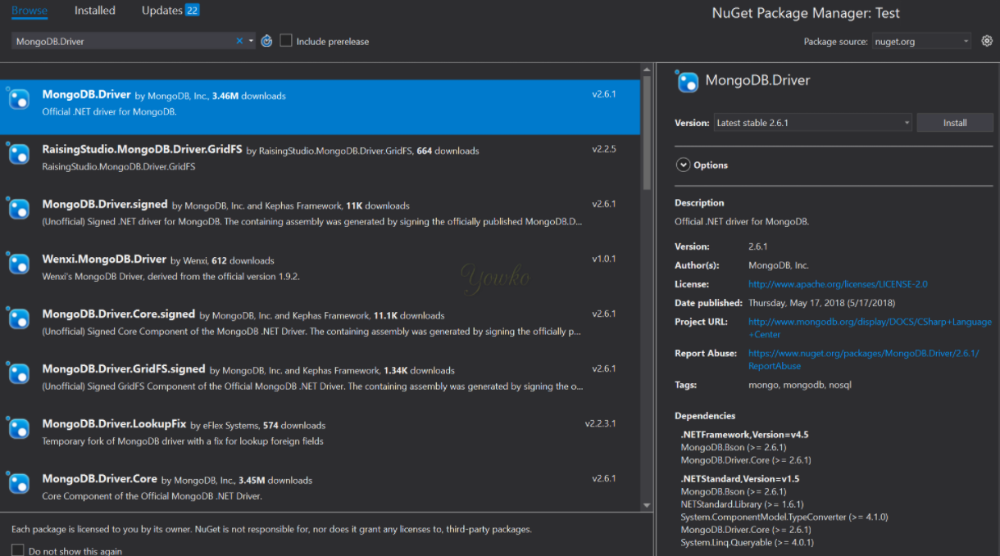
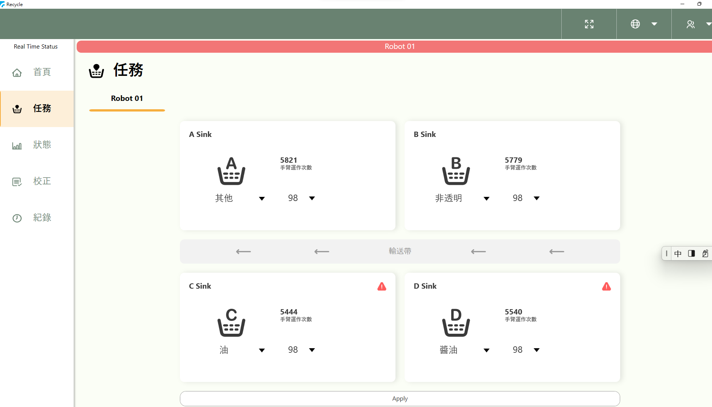
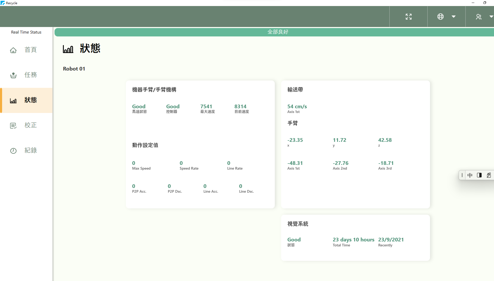
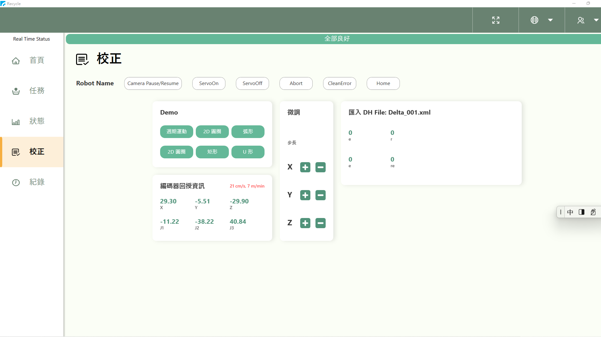
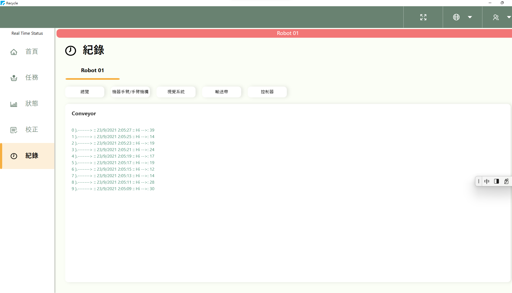

WPF (工研院-協治 機器手臂) 使用文件首頁
動態網頁' 請參考 github website WPF to Download WPF program.
*. 在執行WPF之前,須具備下列條件:
[X]. Win10
[X]. Visual Studio 2015 以上
[X]. MongoDB package 安裝
*. 在執行WPF之前,須了解下列WPF和MongoDB的關係:
[X]. WPF/MongoDB 目錄結構說明
[X]. 使用mongoDB API 對應首頁
[X]. 使用mongoDB API 對應任務
[X]. 使用mongoDB API 對應紀錄
*. 在您使用WPF應用程式之前,請先Win10安裝Server端MongoDB程式和Client端(Visual Studio 2019,VS2019)內的MongoDB安裝套件
*. Win10的MongoDB需安裝Core/Drive(Server端/Client端)
*. Server端安裝步驟請參考mongoDB官網
--MongoDB 官網的步驟有點長,請耐心照著安裝完,官網site如下:
*. https://docs.mongodb.com/manual/tutorial/install-mongodb-on-windows/
--若不指定IP則內定為127.0.0.1,Port為27017,若要指定請小心指定IP不要重複
*. Server IP => http://localhost:port (localhost= http://127.0.0.1 , port= 27017)
*. Client端(VS2019)安裝mongoDB driver /core 1.31套件

WPF 五個主要頁面:
--WPF對應手臂有五個主畫面,分別對應首頁,任務,狀態,校正,紀錄等,相關畫面如下
WPF 第一頁面(首頁,Main Page):

WPF 第二頁面(任務,Task Page):

WPF 第三頁面(狀態,Status Page):

WPF 第四頁面(校正,Cali Page):

WPF 第五頁面(紀錄,Rec Page):
